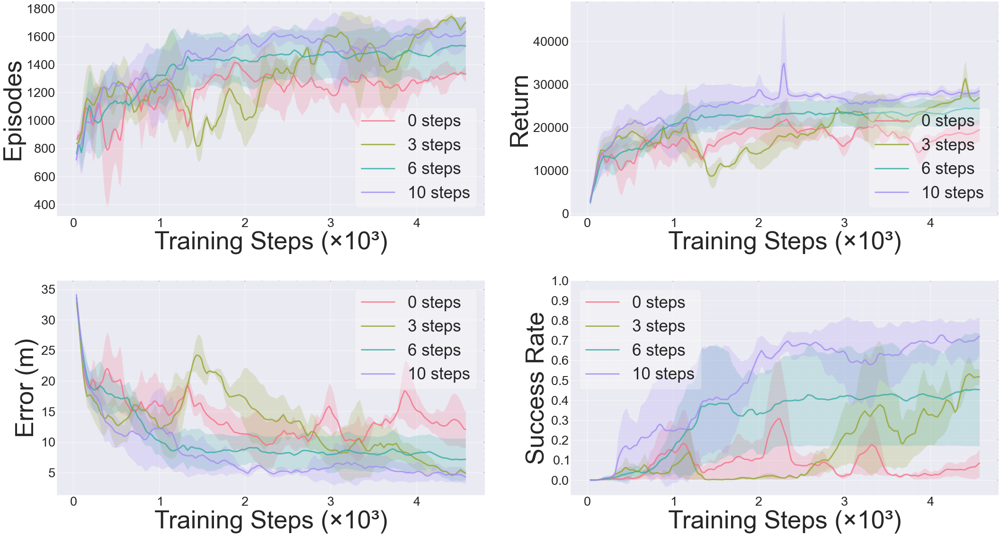
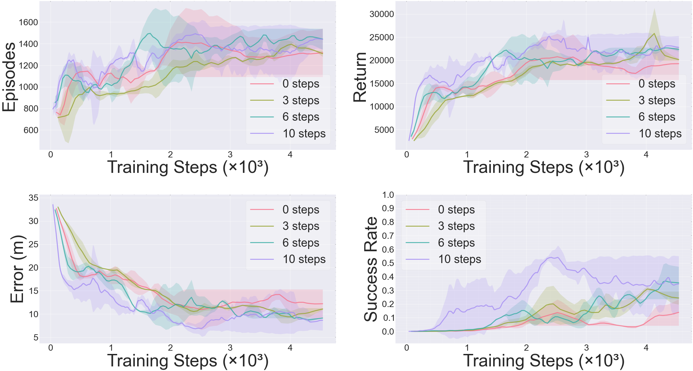

To further assess the contribution of the proposed TDA module, we conduct ablation studies under different flow field settings. All ablation studies are conducted at obstacle density 125 and curriculum learning disabled, so that the impact of TDA can be directly assessed. In the time-invariant (TI) environment, without TDA (0 steps), training is unstable, and the success rate rarely exceeds 0.3. When the steps are limited to 3, training exhibits high variance, and the success rate stays below 0.5. Increasing the steps to 6 improves stability; however, the final success rate levels off near 0.6. With 10 steps, the outcomes are the most consistent since returns increase monotonically, errors converge below 5 m, and the success rate exceeds 0.7 with reduced variance across runs.

Ablation on temporal step length (K=0,3,6,10) in Time-Invariant flow environment

Ablation on temporal step length (K=0,3,6,10) in Time-Varying flow environment
In the time-varying (TV) environment, short horizons lead to unstable training, larger errors, and low success rates, whereas increasing the horizon improves stability and raises performance. Using 10 steps yields the most consistent results, with lower final errors and higher success rates compared to 3 and 6 steps. The ablation confirms that TDA contributes to a more adaptive docking performance, while its effectiveness depends on selecting an appropriate number of steps.